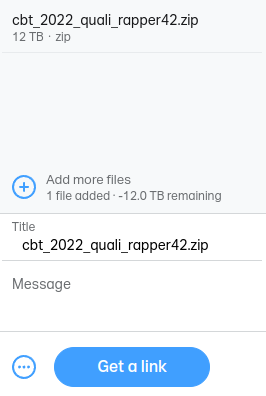
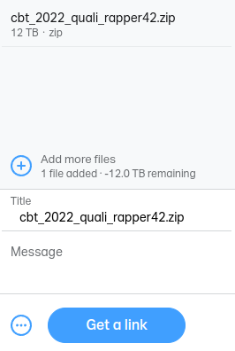

Erstmal sammeln wir unsere Dateien:
cbt_2022_quali_rapper42.zip (oder .7z, .tar.gz, .tar.xz, ...)
- cbt_2022_quali_rapper42.wav (Fertig gemischte Runde; FLAC, WAVE, ALAC, AIFF, AAC, Opus, MP3, ...)
- cbt_2022_quali_rapper42_acapella.wav (Acapella; ungemischt; FLAC, WAVE, ALAC, AIFF, AAC, Opus, MP3, ...)
- cbt_2022_quali_rapper42_instrumental.wav (Instrumental; FLAC, WAVE, ALAC, AIFF, AAC, Opus, MP3, ...)
- cbt_2022_quali_rapper42.mp4 (Video; mp4, mov, ...; H.264, H.265, VP8, VP9, AV1, ...)
- cbt_2022_quali_rapper42.txt (Lyrics; UTF-8 plaintext, bei docx/odt kriegt ihr Schläge (werdet aber nicht disqualifiziert))
Lade die Datei(en) irgendwo im Internet hoch, wir empfehlen WeTransfer.
 

Schicke uns den Link an cbt@chrissx.de, oder auch direkt an pixel🖤#9388 auf Discord. Verwende aber bitte PGP/GPG, um die Nachricht mit unserem Public Key zu verschlüsseln, und benutze auch bitte immer den gleichen Key, um deine Nachrichten zu signieren.